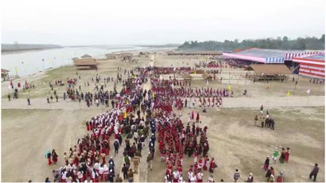
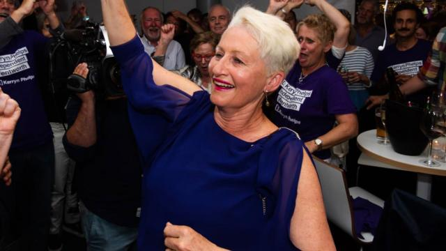

Breaking News


তিব্বতের ধসে আতঙ্কিত আসাম

ধসে থমকে গেছে তিব্বত থেকে নেমে আসা নদীর যাত্রাপথ। এর জেরে বন্যার আশঙ্কায় ভারতের অরুণাচল প্রদেশ ও আসামে জারি করা হয়েছে বিপৎসংকেত। পশ্চিমবঙ্গ ও ওডিশা থেকে উড়িয়ে আনা হয়েছে দুর্যোগ মোকাবিলা বাহিনীর (এনডিআরএফ) জওয়ানদের। তিব্বতের ইয়ার্নলু জাংবো নদী ভারতের অরুণাচল প্রদেশে সিয়াং নামে পরিচিত। আসামে ব্রহ্মপুত্র হয়েছে এই নদী, গেছে বাংলাদেশেও। ভূমিধসে তিব্বতে আটকে পড়েছে ইয়ার্নলু জাংবোর যাত্রাপথ। চীন সরকার ভারতকে এই খবর জানাতেই শুরু হয়েছে বাড়তি সতর্কতা। ভারতের সেন্ট্রাল ওয়াটার কমিশন(সিডব্লিউসি) যুদ্ধকালীন তৎপরতায় পরিস্থিতির মোকাবিলায় নেমেছে। ধস কাটিয়ে নদীর গতিপথ স্বাভাবিক করা হলেই বন্যার আশঙ্কা রয়েছে অরুণাচল প্রদেশ ও আসামে। তাই ইতিমধ্যেই কলকাতা ও কটক থেকে ৩২ কোম্পানির এনডিআরএফের জওয়ানদের নিয়ে আসা হয়েছে। প্রশিক্ষিত এই বাহিনীর ১৪ কোম্পানি মোতায়েন করা হয়েছে অরুণাচলে। বাকি ১৮ কোম্পানি আসামে। ইতিমধ্যেই পূর্ব সিয়াং জেলার ৬ হাজার পরিবারকে নিরাপদ স্থানে সরিয়ে নেওয়া হয়েছে। সিয়াং নদী বা তার আশপাশে সাধারণ মানুষের যাতায়াতও নিষিদ্ধ ঘোষণা করেছে প্রশাসন। আসামের মুখ্যমন্ত্রী সর্বানন্দ সোনোয়াল গুয়াহাটিতে গতকাল শনিবার রাতে সাংবাদিকদের জানিয়েছেন, পরিস্থিতির ওপর রাজ্য ও কেন্দ্র সরকার নজর রাখছে। তবে মানুষকে আতঙ্কিত না হওয়ার পরামর্শ দেন তিনি। সিডব্লিউসি সূত্রে খবর, আজ রোববার সকাল পর্যন্ত স্বাভাবিক ছন্দেই রয়েছে সিয়াং বা ব্রহ্মপুত্র; বরং কিছুটা পানি কমেছে। কেন্দ্রীয় সরকারের মাধ্যমে চীনের সঙ্গে যোগাযোগ রেখে পরিস্থিতি মোকাবিলায় তারা সচেষ্ট রয়েছে বলেও দাবি করা হয়। অবিলম্বে ধস কাটিয়ে ইয়ার্নলু জাংবো স্বাভাবিক ছন্দে না ফিরলেও বিপদ রয়েছে। কারণ ব্রহ্মপুত্র বা পদ্মার পানির মূল উৎসই হচ্ছে এ নদীটি। তাই প্রশাসনিক স্তরে তৎপরতা তুঙ্গে।
রাশিয়ার সঙ্গে ক্ষেপণাস্ত্র চুক্তি বাতিল করছেন ট্রাম্প
রাশিয়ার সঙ্গে পরমাণু অস্ত্র চুক্তি প্রত্যাহার করে নিচ্ছে যুক্তরাষ্ট্র। রাশিয়া চুক্তিটি ‘লঙ্ঘন’ করছে দাবি করে তা প্রত্যাহারের কথা জানিয়েছেন মার্কিন প্রেসিডেন্ট ডোনাল্ড ট্রাম্প। ইন্টারমিডিয়েট-রেঞ্জ নিউক্লিয়ার ফোর্সেস (আইএনএফ) নামের মাইলফলক চুক্তিটি ১৯৮৭ সালে স্বাক্ষর করেছিলেন তৎকালীন সোভিয়েত ইউনিয়নের নেতা মিখাইল গর্ভাচেভ ও মার্কিন প্রেসিডেন্ট রোনাল্ড রিগ্যান। আজ রোববার বিবিসি অনলাইনের খবরে বলা হয়েছে, ওই চুক্তিটির মাধ্যমে ৫০০ থেকে সাড়ে ৫ হাজার কিলোমিটারের মধ্যে মাঝারি দূরত্বের ক্ষেপণাস্ত্র নিক্ষেপ নিষিদ্ধ করা হয়। গতকাল শনিবার নেভাদায় নির্বাচনী সমাবেশ শেষে প্রেসিডেন্ট ট্রাম্প সাংবাদিকদের বলেন, ‘যেখানে আমাদের অনুমতি নেই, সেখানে রাশিয়াকে আমরা অস্ত্র ব্যবহার করতে দিতে পারি না। আমি জানি না, কেন প্রেসিডেন্ট বারাক ওবামা এ ব্যাপারে কোনো আলোচনা করেননি বা প্রত্যাহার করে নেননি। তারা (রাশিয়া) বহু বছর ধরে এই চুক্তি লঙ্ঘন করে যাচ্ছে।’
শেষ রক্ষা হয়নি সরকারি দল লিবারেল পার্টির

অস্ট্রেলিয়ার সিডনিতে উপনির্বাচনে ঐতিহাসিক পরাজয় হয়েছে দেশটির বর্তমান ক্ষমতাসীন দল লিবারেল পার্টির। সাবেক প্রধানমন্ত্রী ম্যালকম টার্নবুল ক্ষমতাচ্যুত হওয়ার পর তাঁর ছেড়ে দেওয়া আসন নিউ সাউথ ওয়েলস রাজ্যের ওয়েন্টওর্থ নির্বাচনী এলাকার উপনির্বাচন অনুষ্ঠিত হয় আজ শনিবার। এ উপনির্বাচনে লিবারেল প্রার্থী ইসরায়েলে নিযুক্ত অস্ট্রেলিয়ার সাবেক রাষ্ট্রদূত ডেভ শর্মাকে বিপুল ভোটের ব্যবধানে হারিয়ে জয়ী হয়েছেন স্বতন্ত্র প্রার্থী ও একজন স্থানীয় ডাক্তার কেরিন ফেলপস। গত ১১৭ বছরের ইতিহাসে এই প্রথমবার ওয়েন্টওর্থ আসনে লিবারেল পার্টি হেরেছে। আর এর মধ্য দিয়ে দেশটির বর্তমান প্রধানমন্ত্রী স্কট মরিসনের প্রধানমন্ত্রিত্ব গ্রহণের পর প্রথম নির্বাচনী কার্যক্রমে দলকে এগিয়ে নিয়ে যাওয়ার সকল প্রচেষ্টা ব্যর্থ হলো। নির্বাচনে জয়ের জন্য মরিসনের গৃহীত বহু সমালোচিত জেরুজালেমকে স্বীকৃতি ইস্যুও কোনো কাজে আসেনি। উপনির্বাচনের শুরু থেকে ভোটারদের সমর্থনে এগিয়ে ছিলেন লিবারেল প্রার্থী ডেভ শর্মা। প্রাইমারি প্রিফারেন্স ভোটের প্রায় ৪০ শতাংশ ভোট আসে তাঁর পক্ষে। সেই ভোটের ৩৩ শতাংশ ভোট যায় ফেলপসের পক্ষে ও ১১ শতাংশ লেবার প্রার্থী টিম ম্যুরের পক্ষে। তবে ভোট গ্রহণ বন্ধ হওয়ার পর মোট ভোট গণনা শেষে দৃশ্য পুরোই উল্টে যায়। মোট ভোটের ৪৫ দশমিক ৬ শতাংশ ভোট আসে শর্মার পক্ষে। আর ৫৪ দশমিক ৪ শতাংশ ভোট পেয়ে নির্বাচন জিতে যান কেরিন ফেলপস। নির্বাচনী ফলাফল প্রকাশের পর ফেলপস তাঁর সমর্থকদের বলেন, ‘আজ রাতের এই জয় অস্ট্রেলিয়ান সরকারের জন্য শৃঙ্খলা, সততা ও মানবতা ফেরত পাওয়ার একটি সংকেত হওয়া উচিত’। এদিকে প্রধানমন্ত্রী মরিসন এই ফলাফল অনাকাঙ্ক্ষিত নয় বলে মন্তব্য করেছেন। উপনির্বাচনে হারের ফলে হাউস অব রিপ্রেজেনটেটিভে সংখ্যাগরিষ্ঠতা হারালেন মরিসন। সরকারের যেকোনো সিদ্ধান্ত গ্রহণে এখন থেকে স্বতন্ত্রভাবে জয়ী ফেলপসেরও মতামত নিতে হবে মরিসনের।


© All Rights Reserved
Prothom Alo 1998 - 2018
Editor & publisher: Matiur Rahman.
CA Bhaban, 100 Kazi Nazrul Islam avenue, Karwan Bazar, Dhaka 1215
Phone: 8180078-81, Fax: 9130496, E-mail: info@prothom-alo.info
Reproduction of any content,
news or article published on this website is
strictly prohibited.Privacy